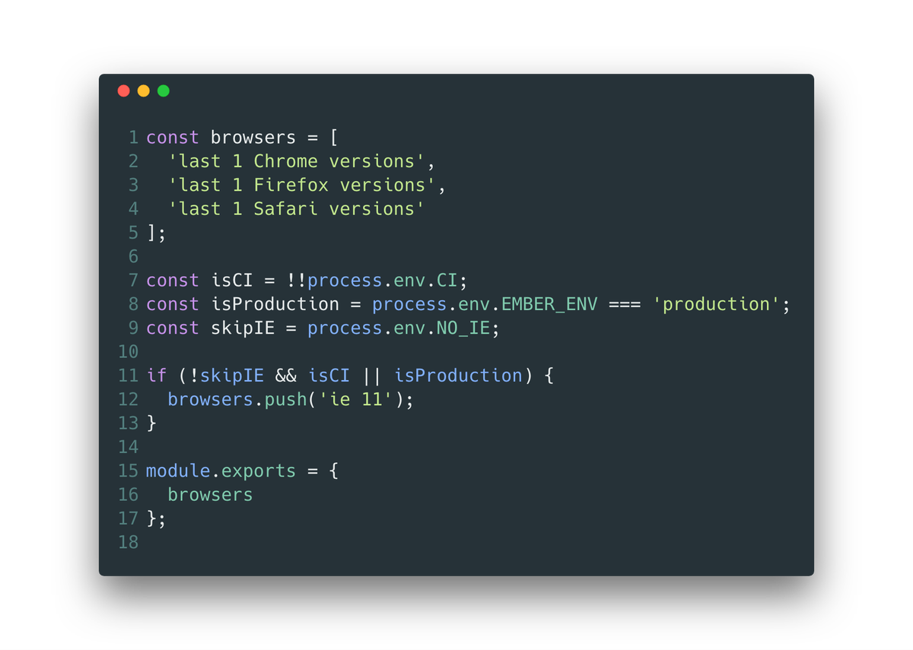

EmberJS provided a way to specify browser targets in April, 2017. With this, one could specify a list of browsers based on the app consumers' analytics and ship properly transpiled code.
When this came out, a few people in the Ember Community(including me) started looking for ways to define multiple targets for the same build. With the current setup of using @babel/preset-env, we were shipping code needed for IE11 to users with Chrome and Firefox even though IE11 users were a considerable minority. Not only were we shipping unnecessary code, we were slowing down their experience in terms of JS parse and compile times. After numerous conversations on Twitter, Slack and Github issues, it became clear that it was not currently possible. I eventually forgot about this.
The call for blog posts for #EmberJS2018 was out and I tweeted about this in one of my replies. After reading Stefan Penner's replies, it became clear that a very obvious solution was to simple generate multiple builds with different build targets and make use of some logic at the server to determine which bundle to ship to the user.
We use ember-cli-deploy and the amazing Lightning Strategy to ship our assets. Please watch this amazing talk by Luke Melia if you haven't heard of this before.
One of the core concepts of this strategy is to have a build label(say, June_1_2018) pointing to the index.html of the build. ember-cli-deploy provides various hooks to take control of your entire build pipeline. Using those hooks, generate and upload two different builds for your application. You can make use of ENV variables to change the targets. So, generate one build with transpilation and another without transpilation. One of these builds works for all browsers specified in the targets.js and the other will work only on modern browsers.

With the lightning approach, each of these builds will have a different build label(say, June_1_2018_1 for transpiled and June_1_2018_2 for untranspiled). With ember-cli-deploy, we can change these! We can change the label of the untranspiled build to ${label_of_transpiled_build}-modern.
Now, once the app loads, you can test for ES6 support by this technique and set a cookie or use the User-Agent to determine which build is needed. On subsequent reloads, check for the existence of this cookie and if the user's browser supports ES6, all you have to do is send the index.html pointed by the ${latest_build_label}_modern.
I used this approach and saw a reduction of around 250kb before gzip and 60kb after gzip in the shipped bundle size for modern browsers. The parse and compile times were reduced and page load time came down by around 5-7 seconds on slower computers!
Feel free to try this approach and share your performance gains, alternate ideas and criticism!